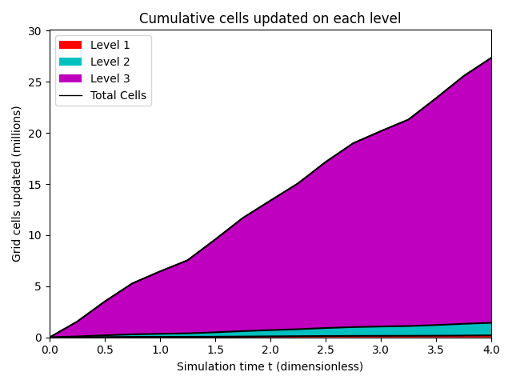
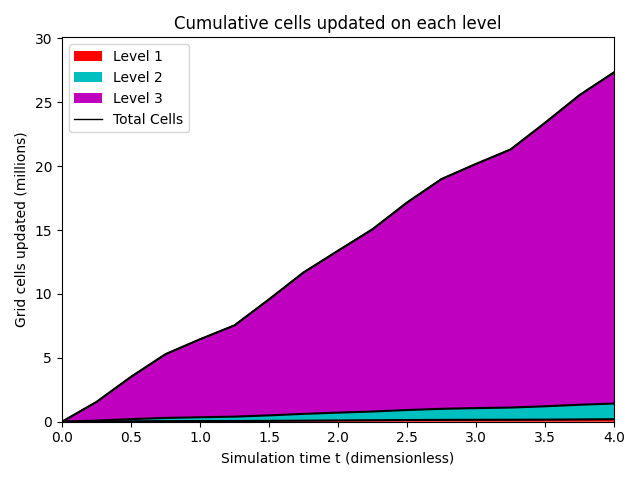
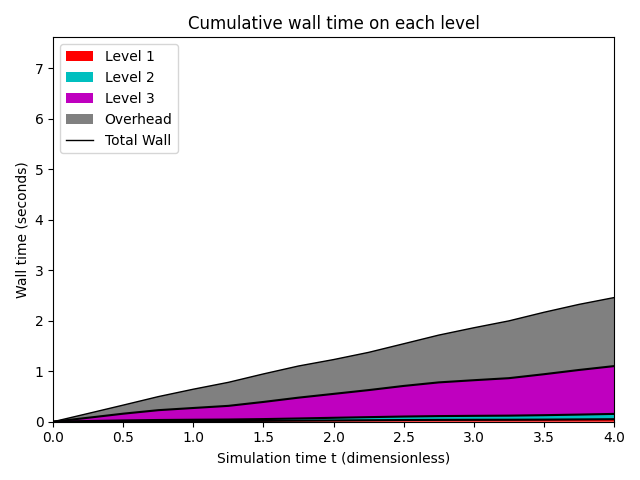
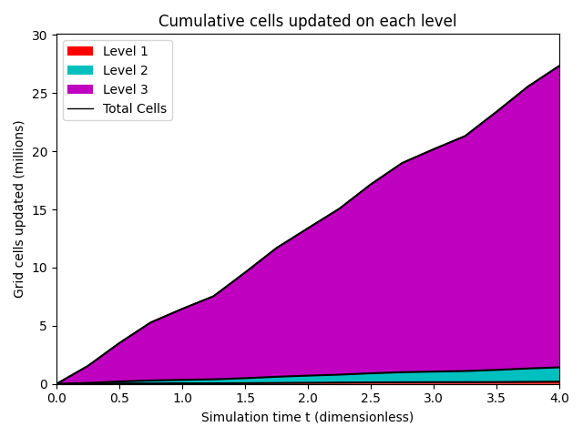
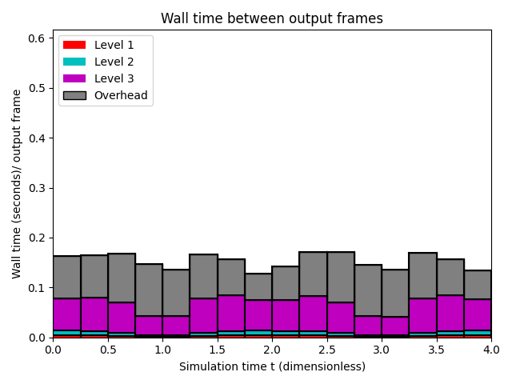
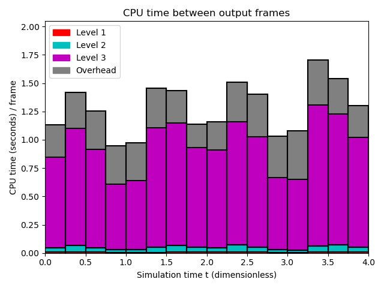
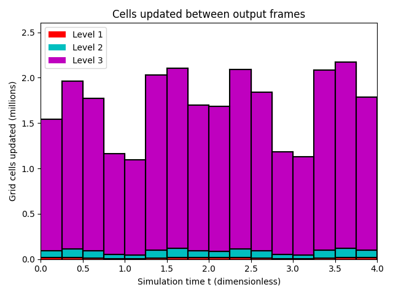
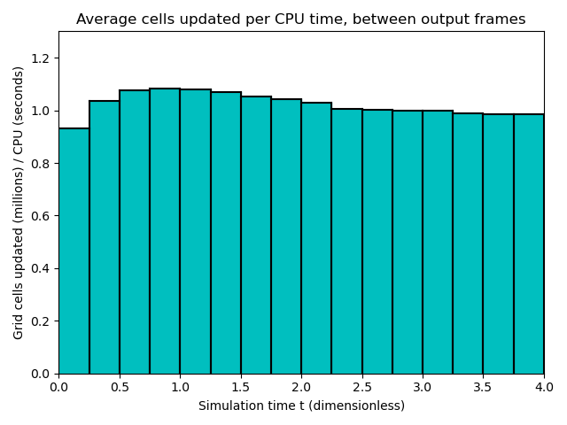

Datetime: 2021-01-17 12:54 From: /Users/rjl/clawpack_src/clawpack_master/amrclaw/examples/advection_2d_swirl/_output
============================== Timing Data ==============================
Integration Time (stepgrid + BC + overhead)
Level Wall Time (seconds) CPU Time (seconds) Total Cell Updates
1 0.117 0.123 0.197E+06
2 0.340 0.673 0.123E+07
3 5.034 14.469 0.259E+08
total 5.491 15.265 0.273E+08
All levels:
stepgrid 5.129 14.524
BC/ghost cells 0.289 0.664
Regridding 0.511 1.297
Output (valout) 3.886 3.816
Total time: 9.948 20.466
Using 3 thread(s)
Note: The CPU times are summed over all threads.
Total time includes more than the subroutines listed above
Note: timings are also recorded for each output step
in the file timing.csv.
clock_rate = 1000000000 per second, count_max = 9223372036854775807
clock_start = 1610916848881929000, clock_finish = 1610916858833417000
=========================================================================


  
